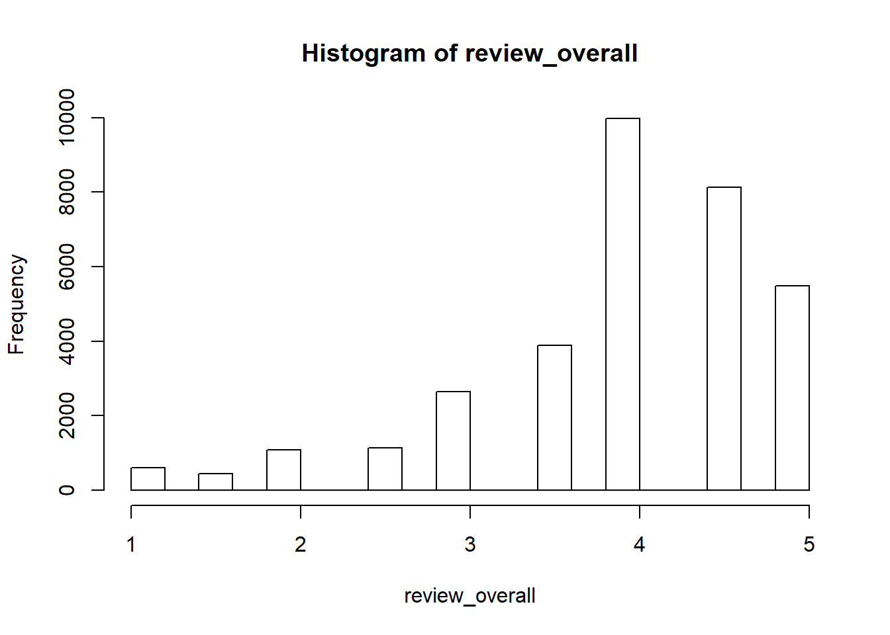
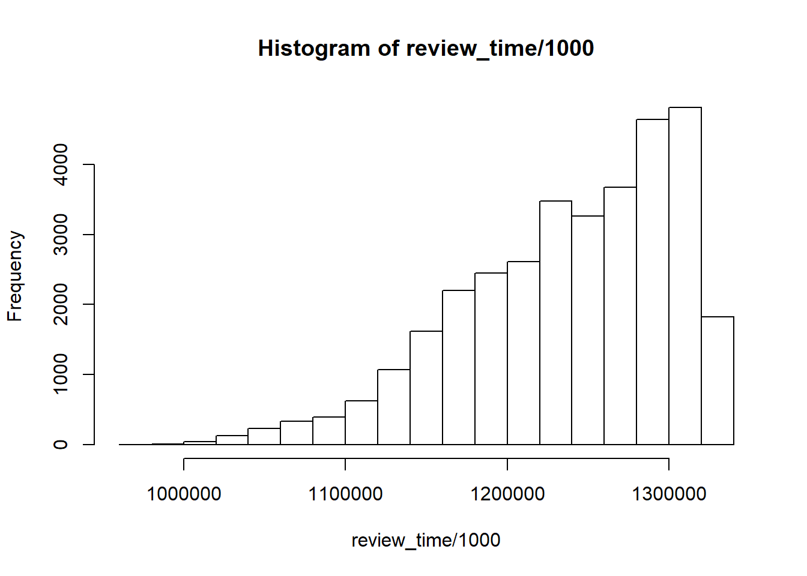

Roughly 1.5 million observations of 104 beer styles (mostly craft) between 2000 and 2012 are provided from Beeradvocate. Upon reviewing the data, it became apparent that most reviewers have submitted multiple entries, which makes weighing of each review unpredictable. To control for this factor, a sample was drawn from the dataset such that each observation had a unique review_profilename. Of interest are the following variables: review_profilename, review_time, review_overall, and beer_style.
summary(unique_reviews)## review_profilename review_time review_overall
## : 1 Min. :1.199e+09 Min. :1.000
## 0110x011 : 1 1st Qu.:1.239e+09 1st Qu.:3.500
## 01Ryan10 : 1 Median :1.274e+09 Median :4.000
## 02maxima : 1 Mean :1.271e+09 Mean :3.964
## 04101Brewer: 1 3rd Qu.:1.302e+09 3rd Qu.:4.500
## 05Harley : 1 Max. :1.326e+09 Max. :5.000
## (Other) :24404
## beer_style
## American IPA : 2562
## American Double / Imperial Stout: 1845
## American Double / Imperial IPA : 1841
## Russian Imperial Stout : 1123
## American Pale Ale (APA) : 968
## American Porter : 650
## (Other) :15421hist(review_overall)
Beer ratings in the sample are left-skewed, indicating that most reviewers enjoyed the beers they were reviewing.
hist(review_time/1000)
Distribution by time shows an increase in frequency of reviews in later years, with the median of Unix date of 1249000000 or July 31st, 2009.
IPAs have been dominating craft beer sales for decades whule Stouts have emerged more recently as a popular style, so our analysis will focus on these two. Using the median date of 1249000000, I will be using a t-test to compare mean ratings respecitvely for IPAs and Stouts to see if there is a difference between them as overall craft sales increased over time.
My null hypothesis are
\(\mu(ipa_1) = \mu(ipa_2)\)
\(\mu(stout_1) = \mu(stout_2)\)